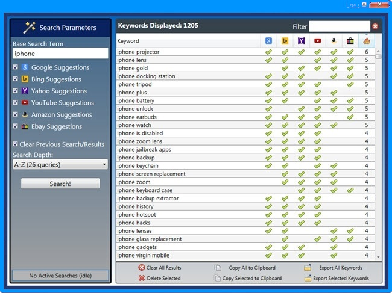

|
Discover How You Can Instantly Uncover "Hidden" Profitable Keywords And Niche Markets That You Can Easily Dominate With Less Effort!
Dear Fellow Marketer,
It's sad but true...
Keyword research is a vital and necessary ingredient in online financial success. Yet, it can also be one of the most time-consuming tasks you can perform.
And the worse part is the fact that you can spend hours, days, or even weeks analyzing and extracting keywords and still be shooting in the dark.
Sure, you'll probably manage to eliminate keywords that won't do you much good... and maybe you'll manage to collect some keywords that *look* like they'll produce good results.
The only problem is...
You're not going to know for certain until you actually put those keywords to the test.
Keyword research can definitely be a tedious, time-consuming process!
At least it used to be, up until now...
It's Time To Stop Playing Around With Random Keywords
In Random Niche Markets And Get Dead Serious!
There's no way you'll succeed if you keep running alongside (or worse yet, behind) the hungry pack of other niche marketers.
The only way to truly get ahead in this game is to gain access to the keywords and topics that are highly relevant to Google, Bing, Yahoo, YouTube, Amazon AND eBay!
How do you accomplish that?
It's SIMPLE.
Get your hands on the only program that can tap directly into these search engines highly guarded keyword "brain cells"!
With InstaKeywordsPro you'll be able to find the most popular keywords on 6 TOP search engines any time you want... 24 hours a day, 7 days a week.
Simply enter your base search term (keyword), select which search engines you want to query and click "Search"!
Then analyze the results, paying close attention to our Cross-Site Popularity score (this instantly shows you how "HOT" a keyword truly is).
Here's a screenshot of this powerful software in action:

How Much Is YOUR Time Worth?
I'm sure you know that your most valuable asset truly is time.
That's why you do everything you can to automate as many online tasks as possible. That way you can get more done and with less effort too.
Well InstaKeywordsPro will save you huge amounts of time while helping you drive more and more targeted traffic to your site!
There are only so many hours in the day, so many days in the weeks, so many days in the month...
And once you've exhausted that time allotment, you can't do anything more than what you've already done.
Keep in mind, the results you achieve are in direct relation to how effectively you manage your time and how much you get done.
It's SO true that "time is money"!
Fortunately, InstaKeywordsPro will save you MASSIVE amounts of time... and can easily pay for itself the very first time you use it!
Get Moving Now Or Get Left Behind - It's THAT Simple!
The sooner you purchase InstaKeywordsPro, the sooner you can maximize the power of your keyword research.
Quickly locate profitable keywords at the push of a button. You'll have the capability of doing it fast, doing it efficiently... and most of all, doing it right!
No question. Having the right keyword and niche information can make all the difference in gaining (and maintaining) financial success.
And now, with InstaKeywordsPro, there's no way you can fail.
Why?
Because you'll know exactly which keywords to choose. All you have to do is use that information to your own advantage.
So order InstaKeywordsPro now and find out how profitable keyword research can actually be when you do it correctly!
And just to take the risk off the table completely...
"Rock Your World, Or Cost You Nothing 60 Day
100% Money-Back Guarantee!"
If you feel InstaKeywordsPro is not worth the very small investment that I'm asking then I don't want your money. I'll give you back every penny you paid. No hassles and we can part as friends. 100% Money-Back Guarantee.
I have to warn you...
Not using InstaKeywordsPro, is the same as taking money out of your own pocket and handing it over to your competitors.
If you're truly in this game to win, then you're already aware of the massive advantage and power you would have if you know exactly what keywords and niches to target.
Well that's what InstaKeywordsPro gives you. So, get your copy now!
Of course, there's still one pesky little detail that stands between you and success... the purchase price. But not to worry. I've made this offer SO affordable you can't possibly turn it down.
Don't delay... lock in the lowest possible price now!
Privacy Policy Disclaimer Contact Us
Have a great day!
Abba Jake
|